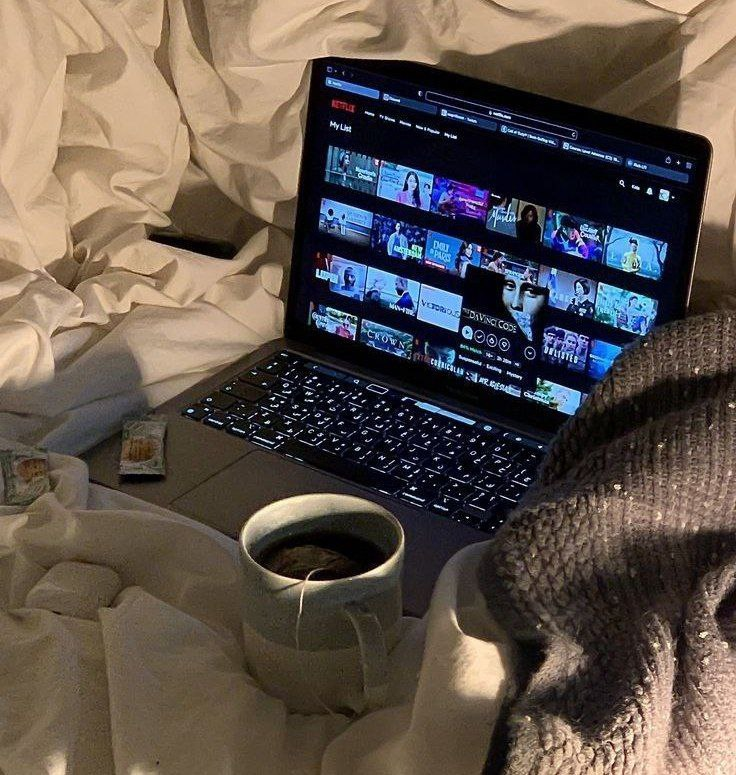
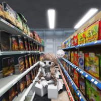

|
MY PERSONAL WEBPAGE |
|
|||

Home Page |

Profile |

Gallery |

Article |

Guest Book |
|||
⊹ ࣪ ˖ Hobby ૮ ․ ․ ྀིა |
|||||||

|
Saya memiliki hobi mendengarkan musik karena musik dapat membuat
suasana hati menjadi lebih tenang dan menyenangkan. Saat mendengarkan
lagu, saya bisa lebih fokus, rileks, dan merasa bersemangat kembali
|
||||||
|  |
Menonton adalah salah satu cara saya untuk menikmati waktu luang. Saya sangat menyukai
drama Korea (drakor) karena jalan ceritanya yang menarik dan penuh emosi. Selain itu, saat makan atau bersantai, saya sering menonton
Windah Basudara, karena kontennya lucu, seru, dan membuat saya tidak bosan.
|
||||||
|  |
Saya senang menghabiskan waktu luang dengan bermain Roblox. Di dalam
game ini, saya dapat mencoba berbagai permainan menarik, dan bermain bersama teman-teman.
Roblox menjadi salah satu cara saya untuk bersantai, berkreasi, dan
menikmati hiburan dengan cara yang menyenangkan.
|
||||||
|
Tiktok |
||||